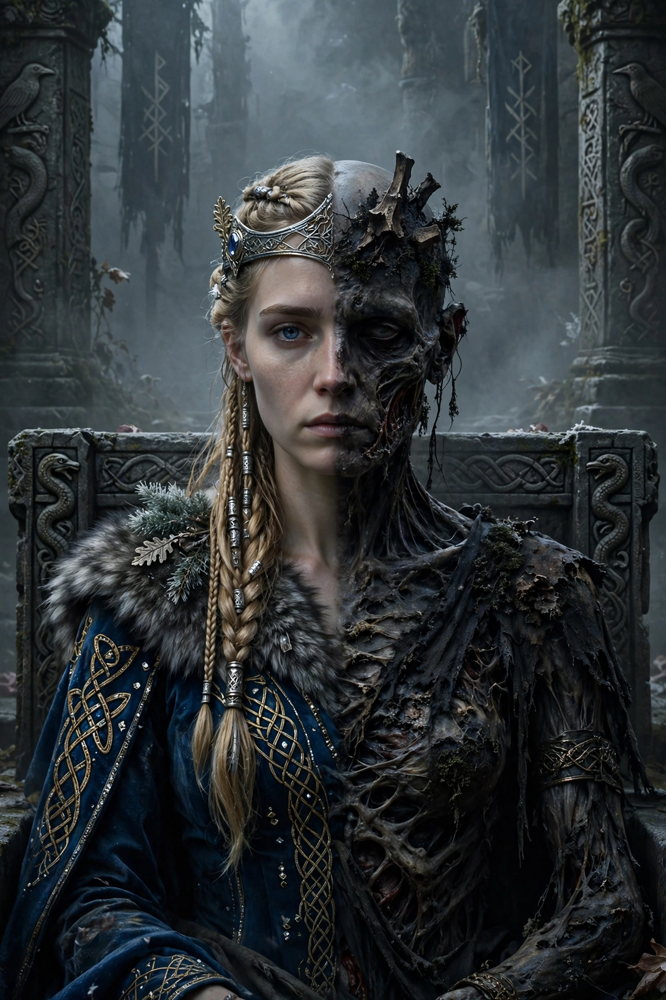

From Wikipedia, the free encyclopedia
| Hel | |
|---|---|
| Affiliation | Norse mythology; ruler of the dead in Helheim |
| Parents | Loki and the giantess Angrboða |
| Siblings | Fenrir (the wolf), Jörmungandr (the world serpent) |
| Depicted as | Half living flesh, half corpse-blue/black |
| Realm | Hel (Helheim), in Niflheim |

In Norse mythology, Hel is the being who rules over the realm of the dead that shares her name — the destination of those who die of sickness or old age, as distinct from the battle-slain chosen for Valhalla and Fólkvangr. Daughter of Loki and the giantess Angrboða, sister of the wolf Fenrir and the serpent Jörmungandr, she is described in the Prose Edda as half blue-black, like a corpse, and half flesh-coloured, downcast and fierce of aspect. Odin cast her into Niflheim and gave her authority over nine worlds of the dead.
Snorri's Hel is a grey, damp realm of hunger and cold: her dish is called Hunger, her knife Famine, her threshold Stumbling-Block, her bed Sick-Bed. Yet it is not a place of punishment in the sources — it is simply where the unglamorous dead go, and its queen is more sorrowful administrator than tormentor. When Hermod rode to beg for Baldr's release, Hel received him with lawyerly exactness: if all things wept for Baldr, he might return — and when one refused, she kept him, "and with Hel he shall remain". She is also named among those who will not be consoled until Ragnarök.
At Ragnarök the dead of Hel sail to battle in the ship Naglfar, though Hel herself takes no recorded part in the fighting; in the reborn world Baldr returns from her realm. Scholars debate how early and how genuinely pagan the figure of Hel is — she may be largely a personification of the grave and her realm, elaborated in the Christian-era sources — and her name survives in the Christian "Hell", borrowed from the Germanic word for the underworld.
Norse mythology · Loki · Baldr · Odin · Persephone (fellow queen of the dead)